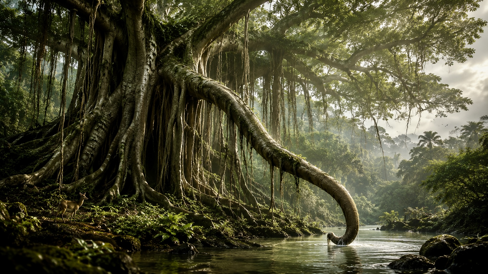
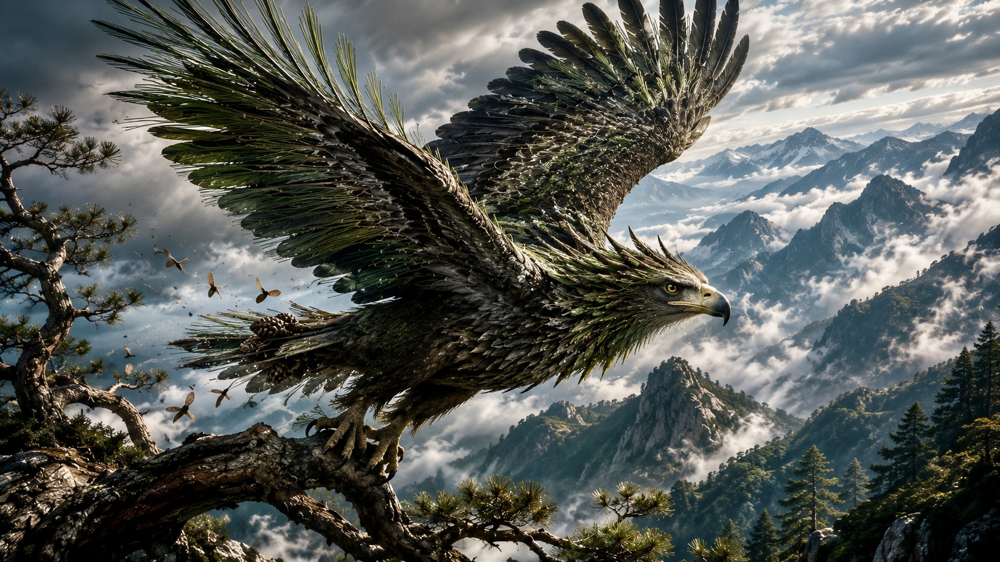
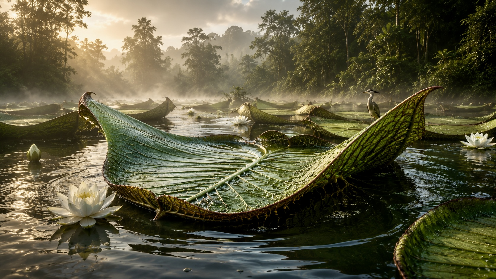

如果植物，
也有动物的模样。
七幅动植物融合的想象。我希望它们看起来，像真的生活在这个世界里。


看形态怎样连接从鹿角，
从鹿角，
长出花枝。
鹿角和枝条都有分叉的结构。花沿着这些分叉生长，保留了鹿角的轮廓，也延续了植物的生长方向。
融合的线索就在连接处：先看清一只鹿，再发现它的角有些不同。


同一个想法，
也有轻巧和有力的模样。
蕨叶小兽靠轮廓让人联想到耳朵和尾巴；松羽之鹰则把松针、树皮与羽翼的层次交织在一起。



从一个生物，
看到一片生境。
像叶片，也像展开双翼的鳐。两张画面放在一起，从水面的细节，看到它们与水鸟、莲花共同组成的湿地。

